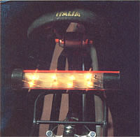
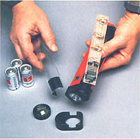
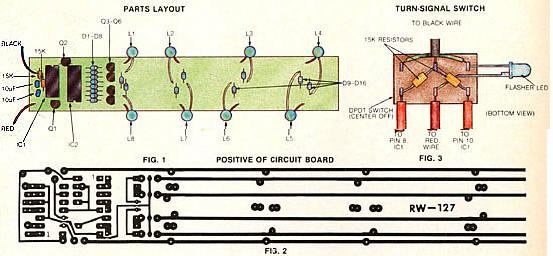
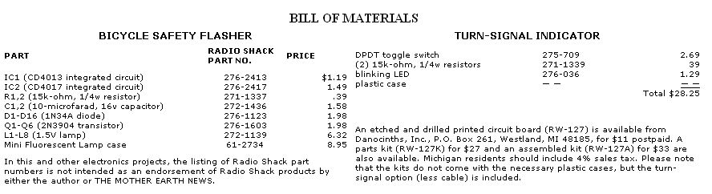

When you're riding in the midst of cars 20 times your weight, it's wise to have a bright light.
Bicycling is a great way to get exercise, and it's an economical, nonpolluting means of transportation. But sharing the same roads used by cars and trucks has obvious hazards. Every year hundreds of cyclists are injured or killed in traffic accidents simply because motor vehicle operators didn't see them.
Manufacturers have tried to make bicycles more visible by installing reflectors and by encouraging riders to wear light-colored or reflective clothing. These steps have undoubtedly made bicycling safer, but they still don't address the fundamental problem: The effectiveness of such passive devices depends entirely on reflected light from the car or truck; at times of low visibility, there's no way the driver will be able to see the cyclist until the vehicle's headlights shine directly on the reflective surface. All too often, that's too late.
If you ride at night, or even at twilight, you need a light source - one that will get the attention of automobile drivers at as great a distance as possible. To that end, MOTHER asked me to design a build-it-yourself bicycle safety flasher, and we think it sets some new standards for attention-getting visibility.
This safety lamp uses flashing lights that sweep back and forth - a technique that movie marquee and arcade designers have long recognized to be eye-riveting. What's more, the appearance of the display is similar to that of many road-hazard lights, which further encourages drivers to steer clear.
Though this project is no more complex electronically than many of those previously described in MOTHER, the size of the case and circuit board forced me to cram quite a few components into a very small space. So as you assemble the circuit board in such close quarters, your soldering skills will need to be at their best.
Begin the construction by installing the logic diodes (D1 through D8) and the lamp-steering diodes (D9 through D16). Be careful: The distance between a couple of the soldering pads on the circuit board is mighty slim, and you don't want to join two sections with a solder bridge. (If you don't have a lowwattage iron with a pointed tip, this might be a good time to spend $6.00 or $7.00 to get one.) Also, be sure to observe the polarity of the diodes - look for the color band on the case to identify positive.
Install the transistors next. Note, however, that Q3 through Q6 do not just plug into the circuit board. Their base and emitter leads must be reversed. Here's how to do it: Hold a transistor so that the flat side faces you. Now grab the center (base) lead with a pair of longnose pliers, and bend it straight back so that the wire rests against the bottom of the transistor case. Do it gently and only once; otherwise the lead will break off. At the point where the lead emerges from beneath the round edge of the transistor's case, bend the lead straight down. What you've done, in effect, is move the base lead backward about one-tenth of an inch.
A similar procedure must be followed for the right-hand (collector) leads on Q3 through Q6. This time, however, pull each lead toward you and slightly to the left - so that it greets the flat edge of the transistor case in line with (but not touching) the point where the base lead emerges from the case. Now bend the collector lead straight down.
The left-hand (emitter) leads on Q3 through Q6 are OK as is; go ahead and install the transistors with their flat sides facing the long side of the board. Q1 and Q2 need not be modified, so you can solder them in their positions on the board in a normal fashion.
Because space on the board is at such a premium, I've violated a few normal construction rules. The most significant of these affects the unused pins on one of the integrated circuits - to gain every last square millimeter, I've snipped off the unused pins.
Before you can install IC2, you'll have to cut off the thin part of the leads (the portion that normally extends into the circuit board) on pins 6, 9, 11, and 12. Please doublecheck the pin numbers before you cut them away, and observe the proper orientation when you install the integrated circuit.
The resistors and capacitors are all wired in a straightforward fashion, and the lamps go into the circuit board as indicated in the parts layout (Fig. 1). You will have to trim the lamp leads to about an inch each, though, so that the inside of the flasher doesn't turn into a spider's web of wires. Save a few of the cutoffs for later, and use one now to jump between pin 2 of IC1 and pin 14 of IC2.
I fit the circuitry and lamps for my safety flasher into a Radio Shack Mini Fluorescent Lamp case. A new unit costs $8.95, though, and it would save money if you could either locate a defunct one or devise your own case. In any event, here's how to put a flasher together using the Radio Shack case.
Disassemble the unit by unscrewing the end rings and slipping off the black endpieces. The lamp breaks down into four parts: a clear lens cover, a flashlight assembly, a battery case, and a fluorescent lamp.
Strip the fluorescent lamp assembly by removing the tube and its electronic circuit board, taking the yellow lead along as you go. Unsolder the black and red leads that go to the board. If the fluorescent lamp was functional when you started work on it, don't throw it away. You might be able to use it in a future low-voltage project.
Now, with a hacksaw, remove the black plastic lamp socket that separates the tube from the circuit board. But don't remove the end barrier or its metal contact; they'll be needed for the battery holder. Finally, remove the reflective metal strip.
To install the flasher circuit board in the case, first solder the red and black wires to their respective points, as shown in the parts layout. You'll also need to solder sections of discarded lamp wire to pins 8 and 10 on IC1. For the moment you can leave them dangling; they'll be put to use later if you decide to set up your flasher as a turn indicator.
No matter how visible you are, a motorist can't read your mind. And on today's lows-lung ten-speed bicycles, hand signaling is sometimes difficult, if not dangerous. The solution is to modify your safety flasher so that it can be used to indicate the direction in which you intend to turn.
The back-and-forth motion of the flasher display lends itself very well to this application, and the two wires coming from pins 8 and 10 on IC1 can be used to control the direction of the sweep. If you're content with the flashing function alone, just solder these two wires to the black wire. But if you'd like to have a turn indicator, you need to wire in a DPDT (double-pole, double-throw) switch and two resistors according to Fig. 3. The switch could be any center-off type, but I've specified a momentary one - that is, its indicator will stay on only if you hold the switch in the ON position. Also, the blinking LED (light-emitting diode) is optional. It's useful to know when your indicator is on, but with a momentary switch, it's hardly mandatory.
The switch and other components can be housed in any small plastic box. Whatever you use, though, you'll need to drill a hole to accommodate the switch (and one for the LED, if you use it). Furthermore, a cable must be run from the flasher to the switch, which you'll probably want to mount to the handlebars. I've found telephone wire to be inexpensive and easy to use. Drill another hole in the case for the wires to pass through, and knot the cable inside the case so it can't be pulled out.
Once you've completed your safety flasher, it has to be mounted to your bicycle along with the switch, if you're using one. A quick way to do this is to install a plumber's U-clamp (a device used to hang a pipe from a joist) on each case prior to reassembling it. Wrap the battery-case clamp around the seat post and the switching-case clamp around the handlebar and tighten them down. Do be sure that the screws penetrating the flasher case don't contact the batteries. If you add a switch, secure the cable along the frame at strategic points with electrical tape, to keep the wires out of the way of potential snags.
As an alternative, you might want to mount the flasher so that it can easily be detached - use strips of Velcro or spring clips, for example. That way, you could remove the assembly and use it as a flashlight (a function that it'll still be capable of serving) when necessary.
To use the bicycle safety flasher, just slide the switch in either direction from the center position (OFF). One way will activate the bar flasher, and the other will turn on the flashlight. The flashing lamps are visible even in daylight, so use the device whenever you ride . . . and cycle safely!
|
 If you need a schematic, send an SASE to THE MOTHER EARTH NEWS, Reader's Service: Bicycle Flasher, P.O. Box 70, Hendersonville, NC 28791. |
 |
 |
|
 |
|
|